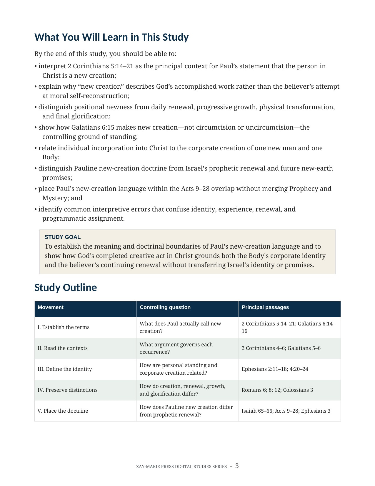
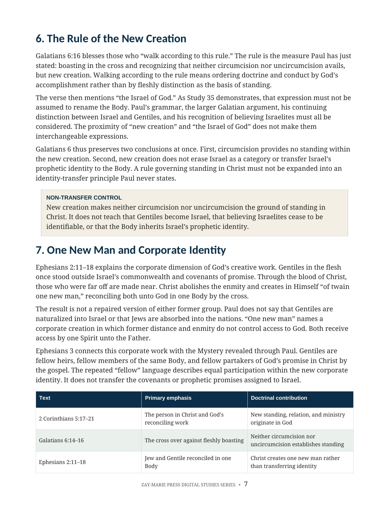
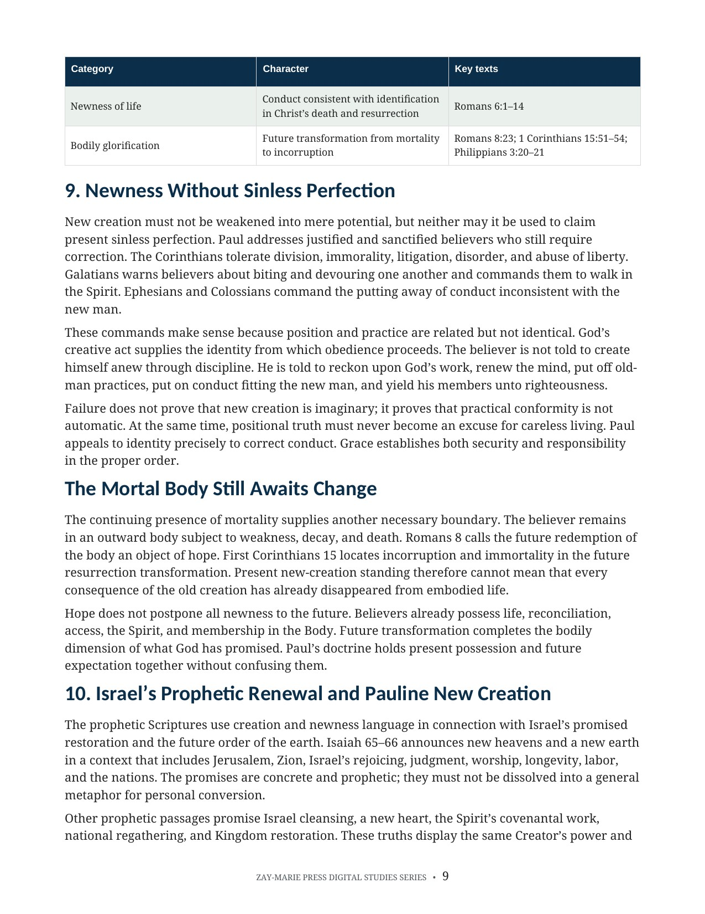
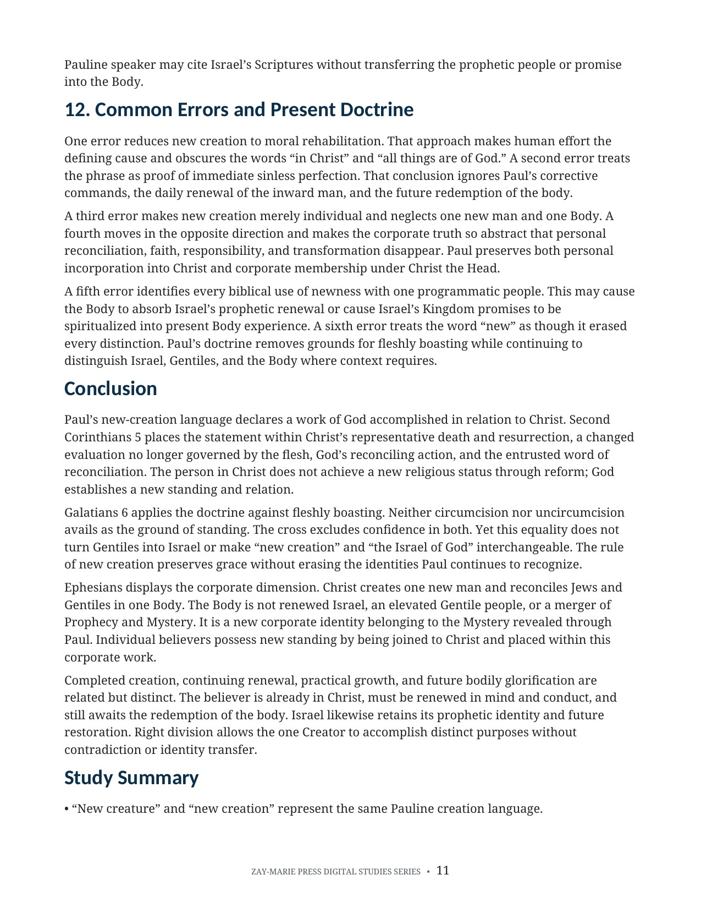

What Does Paul Mean by “New Creation”?
Individual Renewal, Corporate Identity, and the Boundaries of Pauline Doctrine
A focused examination of Paul’s language for God’s decisive creative act in Christ
Paul declares that in Christ there is a new creation and that neither circumcision nor uncircumcision has governing value. What exactly has God made new, and how does that accomplished reality relate to the believer’s continuing renewal?
This study distinguishes new creation, the one new man, practical renewal, newness of life, and future glorification. It also preserves the boundary between the Body’s Pauline identity and Israel’s promised prophetic renewal.
New Creation Is More Than a General Metaphor
Paul’s language announces a divine act accomplished in Christ. It describes a real standing and corporate order established by God, not merely a believer’s improved habits, changing emotions, or gradual moral development.
At the same time, Scripture also speaks of continuing inward renewal, conduct in newness of life, and the future transformation of the mortal body. Reading those truths together requires careful distinctions between position and practice, individual and corporate dimensions, present possession and future hope.
How These Studies Relate
Study 37 examines Paul’s new-creation language as an accomplished reality with individual and corporate dimensions.
Study 16 — The Believer's Identity in Christ Start with the larger account of identity and standing in Christ; it places new creation among related blessings while Study 37 tests this expression’s particular meaning and limits.
Study 4 — Israel and the Body of Christ Check the distinct corporate identities of Israel and the Body before assigning Israel’s prophetic restoration promises to Paul’s new creation.
Study 44 — Walking in the Spirit Distinguish this accomplished new-creation standing from the believer's ongoing, present-tense walk by the Spirit, which this study examines from Galatians 5 and Romans 8.
Distinguish Creation, Renewal, Conduct, and Hope
Paul’s Actual Language
Begin with “new creature” and “new creation” in 2 Corinthians 5:17 and Galatians 6:15 before importing broader theological assumptions.
In Christ
Read new creation within union with Christ, reconciliation, changed standing, and God’s accomplished work.
The One New Man
Relate personal standing to the corporate creation of Jews and Gentiles in one Body without transferring either group into Israel.
Continuing Renewal
Distinguish the decisive creative act from the believer’s ongoing renewal in knowledge, thought, and conduct.
Present and Future
Hold present new-creation standing together with mortal weakness and the future glorification of the body.
Programmatic Boundaries
Compare Israel’s prophetic renewal and the Body’s Pauline new creation without assuming identity transfer.
Follow New-Creation Truth Across Paul’s Argument
2 Corinthians 5:14–21
New creation stands within Christ’s death, reconciliation, changed standing, and God’s work.
Galatians 6:14–16
Neither circumcision nor uncircumcision governs the rule of the new creation.
Ephesians 2:10, 15–16
God creates believers unto good works and creates Jews and Gentiles in one new man.
Ephesians 4:22–24
The believer puts off former conduct and puts on the new man in practical life.
Colossians 3:9–11
The new man is renewed in knowledge according to the image of the Creator.
Romans 6:1–14
Newness of life describes conduct consistent with identification in Christ’s death and resurrection.
Romans 8:18–23
The mortal body still awaits redemption, preserving the distinction between present standing and future change.
Isaiah 65–66
Israel’s prophetic renewal remains tied to Jerusalem, Kingdom restoration, and the future earthly order.
Position and Practice Must Remain Distinct
“Creation establishes the believer’s new standing and corporate identity in Christ. Renewal is the continuing work by which the mind and conduct are brought into practical agreement with that God-given reality.”
The distinction protects both sides of Paul’s teaching: God’s creative act is complete, while responsible conduct and inward renewal remain necessary.
Preview the Study Before You Purchase
Click any page to enlarge it for reading.
{kind=link}

Learning Outcomes and Study Goal
Begin with the interpretive controls and distinctions that keep creation, renewal, identity, and hope in their proper places.
{kind=link}

The Rule of New Creation
Read Galatians 6 and Ephesians 2 without making circumcision decisive or transferring the Body into Israel.
{kind=link}

Present Standing and Future Change
Distinguish accomplished new creation from practical growth, mortal weakness, and the body’s future glorification.
{kind=link}

Common Errors and Present Doctrine
Test competing claims and bring Paul’s language into a concise doctrinal conclusion for the Body of Christ.
A Focused Study Built for
Doctrinal Precision and Responsible Application
Focused Biblical Study
A sustained examination of Paul’s new-creation language and the doctrinal boundaries required to interpret it responsibly.
Twelve Teaching Sections
Move from Paul’s wording and governing contexts through identity, renewal, the Acts overlap, and present doctrine.
Contextual Exegesis
Examine argument, vocabulary, corporate setting, programmatic context, and the relationship between key passages.
High-Contrast Tables
Compare new creation, the one new man, inward renewal, newness of life, glorification, and prophetic renewal.
Scripture-Tracing Exercise
Trace creation, reconciliation, renewal, conduct, corporate identity, and future hope across Paul’s letters.
Review Questions
Test the difference between position and practice, individual and corporate truth, and present standing and future change.
Teaching Outline
Use a ready framework for defining new creation, separating related doctrines, and guarding programmatic boundaries.
Guided Further Study
Grouped investigations support deeper work in Corinthians, Galatians, Ephesians, Colossians, Romans, and prophetic renewal.
What Does Paul Mean by “New Creation”?
Digital PDF · 15 Pages · For personal use
Want More Than a Focused Study?
Digital Studies examine particular biblical subjects and difficult passages. The 40-lesson Biblical Hermeneutics course teaches a complete, repeatable method for establishing meaning in context, determining proper assignment, and making responsible application.